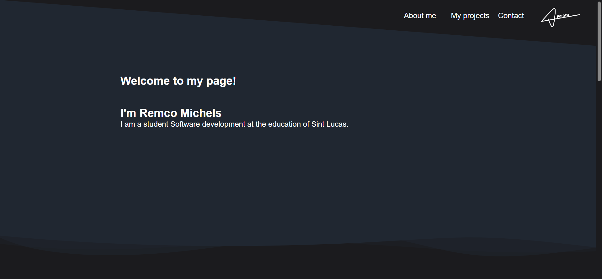
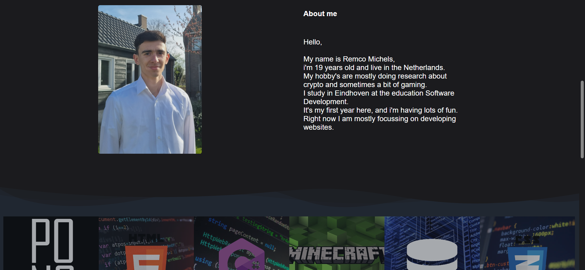
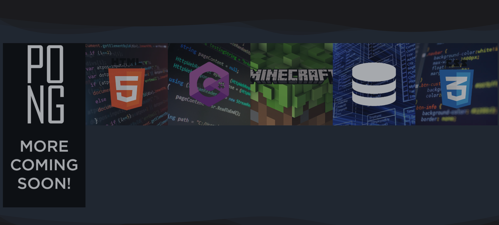

Dit is mijn eigen portfolio website die ik gemaakt heb voor het shine project
Dit was de eerste echte website die ik heb gemaakt, het ging wel wat moeizaam maar het is uiteindelijk gelukt
Ik heb veel eigenheid laten zien in deze opdracht omdat ik alles zelf mocht bedenken.
Maar als ik het nog een keer moest doen had ik het wel anders gedaan.
Ik heb veel geleerd van het maken van deze website over hoe de opbouw en de styling van een website werken.
Ik ben wel tevreden met het eindresultaat ookal heb ik geen voldoende hiervoor gekregen.
Zelf vindt ik dat ik veel groei en eigenheid in deze opdracht heb laten zien, dus ik ben er trots op.
Ik kan dit goed gebruiken voor andere opdrachten om een nog beter resultaat neer te zetten.
Hieronder zie je de 3 delen van mijn portfolio website.
Eigenheid


